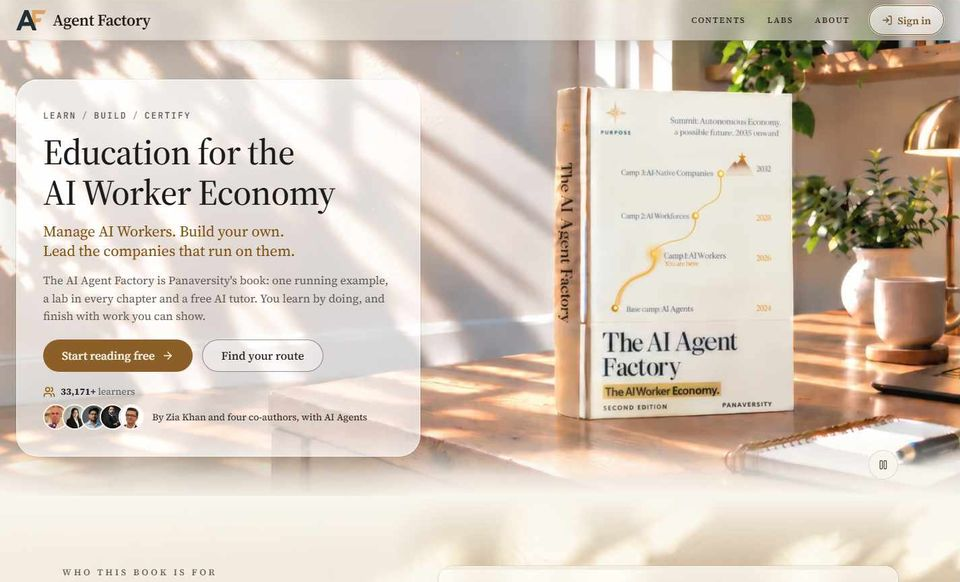

Main coursebook
The AI Agent Factory, second edition
The book the whole course follows. It has one running example, an accounts-payable AI Worker at a small company, a lab in every chapter and a free AI tutor. Pick a reading route: everyday professional (7 to 11 hours), builder, domain expert or leader. New to AI? Read Part 0 first, then Chapter 1, From Chatbots to AI Workers.
- Free to read
- A lab in every chapter
- Zia Tutor AI included